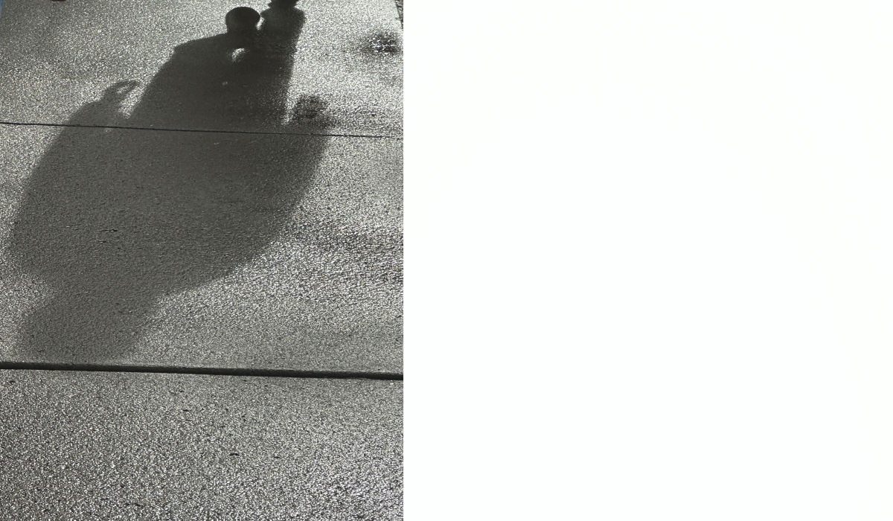
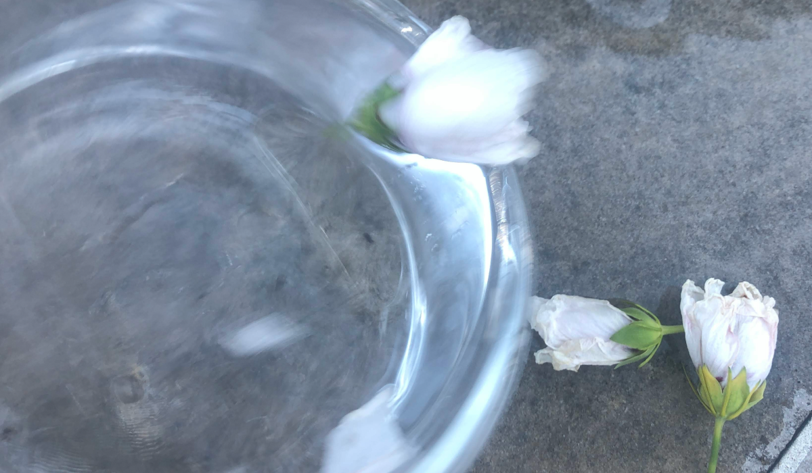

![My parents are fighting all
the time and I feel trapped. I dont know who to talk to about this so I guess I'll
just put this here. My dad drinks, I dont know if he could be considered an alchoholic
as somedays he doesn't drink at all and other days he is out in the backyard drinking
until Midnight when he comes in stumbling over himself. In the past he would pick fights
with my mother when he was drinking and would get very angry. He never put his hands on
us though, never would get physical. He hasn't gotten drunk and picked a fight like that
in a while, maybe the last time he's done it was about a year ago or a little less. When
he's drinking he usually doesn't get very mad at me and my siblings and instead is very
annoying as he constantly pesters us and tries to give us long talks and stuff but I hate
it when he does it when he's drunk because I know its not genuine and its just the liquor
talking. When he's not drinking, he's a good dad and he takes us out places and does stuff
with us, and he does stuff like cook and washes the dishes. In the case of my Mom, she
really takes on a big load in the family as she drives us to school and appointments, cooks
a lot of the time, and all that. She is extremely loving towards me and my siblings and I
love her very much, as I do my dad. But she clutters out house up with a lot of stuff and
doesnt want to get rid of anything. Our house isn't dirty or anything, it is just very
cluttered with boxes, piles of papers, a bunch of old books, old toys, stuff like that.
Like our living room is so piled with stuff that I wouldn't even be able to lay on the
floor and extend my arms and legs freely without hitting anything. We just have this like
5x8 foot square in our house as our living room. Its not like we're swimming in junk as
the piles are all pretty neatly organized and we have space to move around and aisles and
stuff, but still its pretty weird. My dad despises my mother for this, he always is trying
to get her to get rid of stuff. She always puts it off and tells him that it'll get done
but to be honest it never does get done and he keeps getting frustrated about it, and now
I think he's almost reached his breaking point. I have to share a room with him because I
used to sleep in another room but I got too big for that bed about the time I reached high
School, so I had to move to the room where my dad sleeps and now we share a room, the problem
is that the room is very very cluttered, mostly with stuff like boxes of our old baby clothes
and stuff like that man I dont even know. Today my dad and mom were fighting because he tested
positive for covid, and he got me sick as well and my mom told him that if he had kept his
mask on overnight I wouldn't have gotten sick as well, and he says that it is very hard to
breath with the mask and then the situation escalated as it always does and shifted towards
the topic of the clutter, as it always does. My mother finally told dad to just go to his room
and rest and then he's like I cant rest in that room, with all that clutter in there and thats
basically how its been for as long as I can remember. So my dad's mad at my mom for the clutter,
and my mom is mad at my dad for being an alchoholic and not having a larger part in our lives
(sometimes I dont even see him until the end of the day because when he gets home from work he
just goes straight to his chair in the yard and starts drinking, then comes inside at night
drunk). This is my world, and I am afraid of reaching out for help because once I do, I know
it will open up a whole new can of worms and probably make the situation more complicated than
it already is. This will probably blow over, as it always does, that is, until they have another
fight and the cycle starts all over again. I don't know how many times this can keep happening
because I think my dad is reaching his breaking point, as I can see he is very frustrated. All
I know is that neither one of them is innocent, they both have their problems, and Im just so
tired of feeling so alone and like I'm having to take sides. I just want it to stop. Thats all.
Sorry for the long post. Thanks for taking the time to read.](img/secrets/2-text.png)


![I already want to dropout out college. Hello, I'm
F(19) and I am a college freshman. I am the first to go to college and show potential of finishing, but as
I start thinking for myself, I hate college. I want to dropout. I wanted to study business, but the advisor
was rude and didn't advise me at all. All she did was belittle me in wanting to take business and didn't even
let me talk. She told me I needed to do more research and blah blah. I was destroyed. I was crushed, it was
like a 100 pound weight got on my back and has left me lazy and emotionally destroyed for weeks. I have not
attended class. I have not even done classwork at all. I'm ashamed. I'm sad. And I have so much going on. My
family is demanding me to get rid of my cat, she's my emotional support. My sister won't talk to me because
she's bipolar and she's a different person everyday. The rest of my siblings I can't talk to because they are
either aggressive or in the puberty stage that they hate everyone and everything. My folks are old. I have no
parents. My family is not emotionally supportive. I feel alone. I feel like I am just not enough for the world
to love, don't get me wrong. I have an AMAZING boyfriend. But, he feels like he is not a monogamous person. So,
he wanted to open the relationship to prevent loosing me and breaking my heart by cheating on me. Why can't he
just love me? I mean he does and swears he has no emotion to other ladies he fucks, but my heart is still kind
of crushed. I try to keep up and fuck other people, but I want monogamous love. But, I don't want to lose him.
He is the only person loving me and taking my feelings in to consideration. We talked about the open relationship
the other day and let me air out my emotions and we worked something out. 1-2 people a month. He was okay with it.
But, anywho. I want to quit. But, its not like I don't have a plan and don't plan to work. I want to build a career
in computer science. I want hands on experience, not in a classroom doing fuck all. I want internships. I want a job
that I'm getting paid for, not pay to gather knowledge for a job in a classroom where I am not doing real life
scenarios. I'm lost and I dunno what to do. I want to leave, leave as fast as I could. I live with my grandfather,
he is a hoarder with a bug infestation and the roof could come down at any moment.](img/secrets/7-text.png)



![I think I might be disrespecting my friend's culture.
For the background,
I (16M) have 2 close friends,
Eliza (16F) and Kai (16NB).
We've been friends for 3 years.
So, starting off, Eliza is desi and lives in
a desi household. Growing up, she never had
a personal phone and was not allowed to go on socmed. In primary school, she told us that she was bullied for being desi however she has many desi neighbours and keeps in contact with her family back in Bangladesh. Last year, Kai gave her a phone and there she was introduced to various socmed platforms such as tiktok and discord. It was fine until she discovered the part of tiktok that normalizes abuse.
Now, when I say 'abuse' I mean that her mum would physically abuse her by hitting her and she recounts a time when she had to lock herself in her room because of this. I remember a time when she would come to school and would have bruises on her legs and arms.
Getting into the main part, since it's close to exams, we don't have compulsory lessons anymore so all 3 of us planned to hang out for 1 day this week and turns out Eliza can't go because of her parents. This usually happens where we would make plans and Eliza's parents would say it's okay for her to go but then have plans on that day which makes it so she can't go out with us so we're used to it. We've argued about it but usually, we would make up and push it under the rug but I think today was her breaking point.
She defended her parents and kept telling us that her parents were not the problem and that she was the problem and that she deserved to be hit because she did things that her parents told her not to. She also said that the reason why they don't allow her to have a phone and go out and stuff was because they were protective of her.
Me and Kai told her that it wasn't ok that she was
being hit or that her parents were overprotective
she kept bringing up about how it was a desi thing and that we would not understand because we weren't desi. Kai's told her countless times that having abusive parents was not a cultural thing but she kept repeating the same thing. I told her to refer to a professional because her situation with her parents wasn't ok and that it wasn't ok for her to think this is all her fault.
Is this actually a cultural thing and did I overstep?? I dont know what to do now. I've kind of ghosted her and I feel like I should apologize
but I know things would still be awkward.](img/secrets/9-text.png)
![I ruin pedophiles lives and i just love every second of it. About 2 years ago i started going on omegle and finding predators and pedophiles by putting a prerecording of a young girl on the screen , most of them fell for it and when i had gathered every piece of information about them i would expose them to their familiy and ocationally the local PD in their area.
I sometimes also meet with them and i just film their reaction and start questioning them.
This is just an hobby i rarely do these kind of stuff anymore... but i really needed to tell someone this one .](img/secrets/10-text.png)

![I am not interested in romantic relationships. Friendships are great, work relations are alright. I draw the line at romantic relationships. I'm 27M, and I've decided to simply set it aside and work on my own wellbeing.
I'd say the main contributing factor to this was the breakup of a long 5 year relationship that was actually fruitful and worth it. I won't go into the specifics, but betrayal and extortion from someone that is closest to you leaves someone in a dark, dark place.
I can't say I'm out of the woods yet, but I'm out of that pit of depression that I dug, and getting to socialise with people again has been a literal leap of faith off a cliff. So far, so good.](img/secrets/11-text.png)

![I like my straight friend (who already is in a
relationship). Me and this friend of mine met in high
school when I was 13 and she was 14. Nothing romantic has ever
happened between us, because I've never seen her in that way, sure,
she's attractive but that was it.
She knows I like girls, my other friend (also F22) also knows I like girls but
I can't tell anyone I like her, we have too much of a good friendship for me to
just ruin things.
The relationship is bit is a little complicated because she's been on and off with
this one guy ever since she was 16 and they're trying to see if things might still
work out for them, besides me liking her I don't approve of it (not getting into details because what if she reads this and realizes it's me). She says she's not in love with him, the feelings just faded on both sides, so that's why I don't approve
of them anymore.
I just needed to write it down. If you're reading this, I'm sorry you had to find out this way, I guess I don't have the courage to tell you in person but even when I slightly touch you leg with mine while we're sitting next to each other I feel happy.](img/secrets/12-text.png)

![I don't ever want to get into drinking or smoking
Like the title says, I really don't wanna get into
doing anything like that, but where I'm from, kids
my age range (15-17+) are smoking all of the time,
partying and getting drunk. My school has even given
in to letting the kids smoke/vape as long as it's outside of the building during break times. But I feel so left out, even though I don't wanna do these
things. Like, at all. My best friend, even, openly
talks about how she's constantly getting drunk and
she's only 15. I'm starting to think that most teens
are feeling pressured to do these things, but I don't
want to risk being sick or developing health issues.
I'm just worried one of these days I'll be made fun
of for my indifference. And almost everyone in my
school is like this-- it kind of disgusts me and makes me feel unwelcome.](img/secrets/13-text.png)
![Lately I realized how much I care about what others think about me
and how this influences my decisions
I know I shouldn't care
and I never even noticed this until a few weeks ago,
but I'm constantly worried about it.
Like I might decide to
not do something I actually want to do
just because I don't want others to think
I've done it because they said so,
or because I don't want them to think
'he finally did it'
I worry about it even when I'm alone
and no one can actually see what I'm doing,
this is crazy.
As I said, I know I shouldn't care but I just can't help it
and I don't know if I'm myself anymore or if
I'm just what others want me to be.
I'm really mad at myself for this.
I always thought I was different from 'regular people' ,
instead I'm just the product of society who looks like an outsider](img/secrets/14-text.png)




![I stink and i dont know why. I dont know whats wrong. Last year I started tacking showers every other day with body wash and ONLY shampoo. And i would also use deodorant, which i dont think that really helped. I think i dont have friends because of that, im mostly quiet in school so thats how i found out that i probably stink.
I kinda sweat a lot, from my body and my scalp. i started showering every day using head and shoulders, and native mint conditioner and old spice body wash but i dont think they works. (I use a deodorant but i dont think its for me) I dont know know how to smell good and i think im just gonna accept the fact that i stink. No ones helping me.](img/secrets/17-text.png)
 



 
